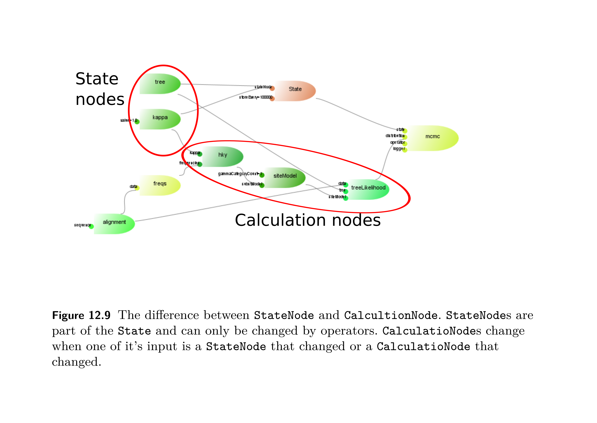
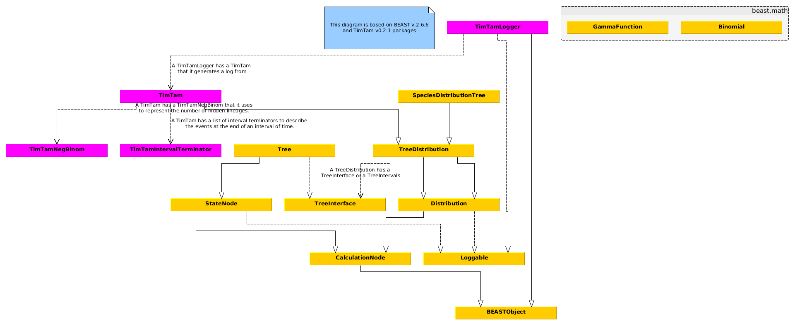
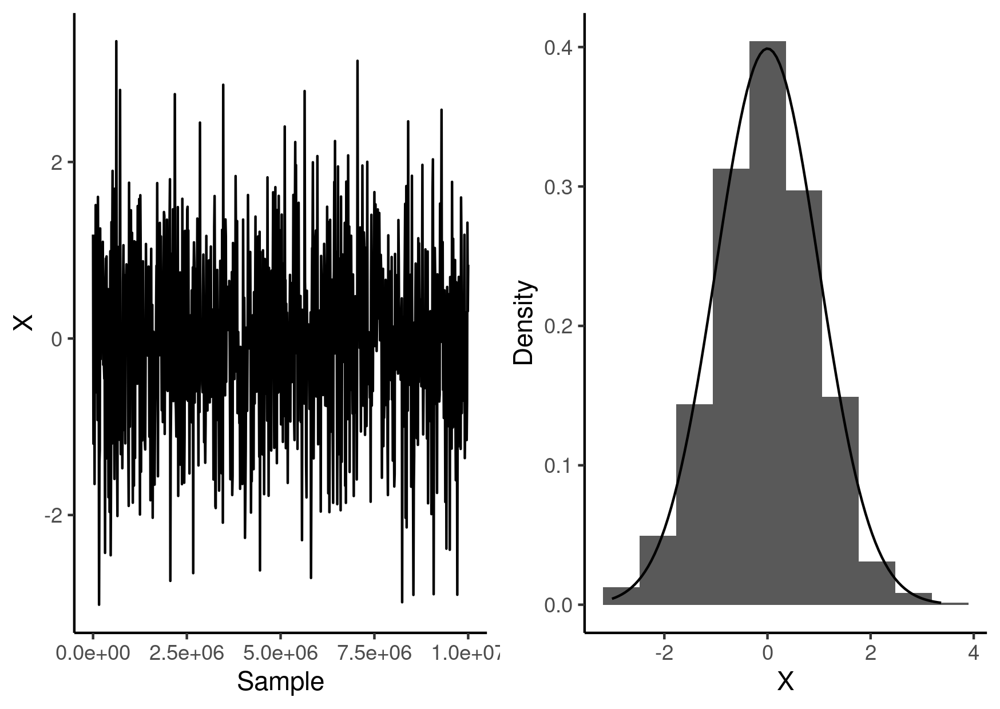
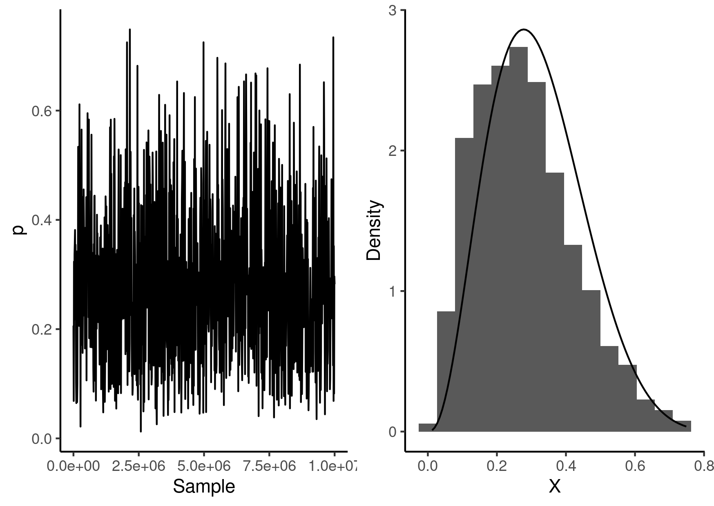
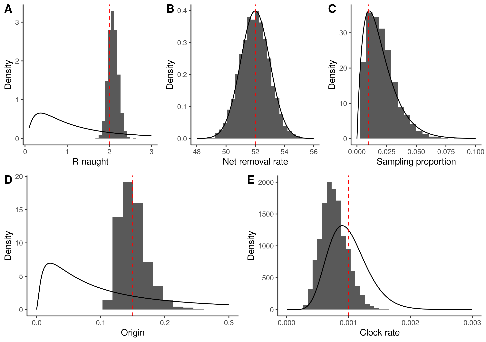

beast2-aez-notes

Table of Contents
Links
- LinguaPhylo is a scripting language that can be transpiled to BEAST2 XML
- BEAST2 Documentation for "the user who wants to edit BEAST2 XML manually."
- BEAST2 repository
- bdsky - Birth Death Serial Skyline Model for BEAST2 the GitHub repository
- feast a collection of resources from Tim Vaughan
- skylinetools is a package from Louis du Plessis which has skylining
functionality, (the
DateParserconstructor has a nifty trick.) - Taming the BEAST is a collection of tutorials for BEAST2
Notes
Build a BEAST2
- Clone the BEAST2 repository.
git clone git@github.com:CompEvol/beast2.git
- Build the project by running
ant.- If you don't care about running the tests
ant compile-alldoes the compilation without running the tests.
- If you don't care about running the tests
- Run the desired program:
java -cp build/dist/beast.jar beast.app.beauti.Beautijava -cp build/dist/beast.jar beast.app.beastapp.BeastMain
Note that you can clock on the little '?' in Beauti to get the location that packages are stored at.
Notes
v2.6.7:
TODO Understanding Packages
Bouckaert has a blog post about building package from source from mid-2021. The
following line from the Babel build.xml (which is the example package used in
the blog post)
<property name="beast2path" location="../beast2" />
makes it sound like it assumes that BEAST2 will be in the same directory as the packages during compilation.
TODO Configuring IntelliJ for writing a package
I have no idea if this is the correct way that BEAST2 packages should be set up, but this has worked for me in the past, and provided there are a sufficient number of unit tests I assume it should work…
- Note that the
build.xmlprobably assumes that BEAST2 and your code are in sibling directories. - Build the BEAST2 project first and then close it and open your project
(probably based on the results of
ant skeleton). - Click through File – Project Settings – Modules – <YOUR/PACKAGE> and then using the + (add) button, tell IntelliJ that you want to add a Module Dependency, which will be BEAST2.
- When building the package, if it complains about missing packages, you may need to add JAR files in the same way.
Understanding BEAST2
- A class diagram showing the relationship between the various classes that are relevant to tree priors are shown in Figure 2.
- The
BEASTInterfaceis an interface which all BEAST-objects must implement, theBEASTObjectclass implements that interface and most objects we care about will derive fromBEASTObject. - The
StateNodeis akin to the stochastic node of H\"{o}hna et al (2014), ie it is a random variable. State nodes can be changed by operators. - The
CalculationNodeis akin to the deterministic node of H\"{o}hna et al (2014), ie it is a deterministic function of its input. - See Figure 1 which is helpful for understanding where state and calculations nodes sit in this formulation.
- The
TreeDistribution(which extends theDistributionabstract class) is the foundation for both the classes deriving fromSpeciesTreeDistribution(which are the birth-death models) and various coalescent models. - There is a
ModelBuilderapplication for visualising a computation. Operators are used to change the value ofStateNode(of whichRealParameteris an example).

Figure 1: Figure from Drummond and Bouckaert (2015).

Figure 2: Class diagram relating to tree priors in BEAST2
Packages provided by BEAST2
Inference
The beast.inference.distribution package (which previously was part of either
the beast.core or beast.math packages) contains the classes from the Apache
Commons Mathematics Library, (it appears to use version 2.x). Since the
triangular distribution was not added until 3.0 it is not part of BEAST2.
Understanding bdsky
To understand the implementation of time varying parameters see the following:
To understand how this implements the BDSky model see the following:
- BDSSkylineSegment (class)
- BDSParameterization (abstract class)
- CanonicalParameterization (class)
- R0Parameterization (class)
which all culminates in ParameterizedBirthDeathSkylineModel (class) which is the class that actually does the main calculation.
Skyline (interface)
public interface Skyline { }
Skyline is an interface provided by the bdsky package
- This represents a multivariate right continuous function on a domain \([a,\infty)\).
- The interface requires the methods
getSegments,getValue,getValues,getTimesandgetDimension. - Things that implement
Skylinelook like lists of
SkylineSegment (class)
public class SkylineSegment { }
SkylineSegment is a class provided by the bdsky package
- This represents an interval of time, \([a,b)\), and a vector of values assigned to that time.
- There are methods
startandendto get the start, \(a\), and end, \(b\) times of the interval.
SimpleSkyline (class)
public class SimpleSkyline extends CalculationNode implements Skyline { }
SimpleSkyline is a class provided by the bdsky package which represents a
piece-wise constant function (with a one dimensional range).
MultiSkyline (class)
public class MultiSkyline extends CalculationNode implements Skyline { }
MultiSkyline is a class provided by the bdsky package which is really just a
wrapper around a list of =SimpleSkyline=s, which takes care of splitting up time
into the required number of segments.
BDSSkylineSegment (class)
public class BDSSkylineSegment extends SkylineSegment { }
BDSSkylineSegment is a class that wraps the SkylineSegment and specialises it
for use as the parameterisation of the BDS model. Both the
CanonicalParameterization and the R0Parameterization make use of this class,
constructing their skyline segments with it.
BDSParameterization (abstract class)
public abstract class BDSParameterization extends CalculationNode { }
BDSParameterization is an abstract class provided by the bdsky package which
provides a template for writing classes which provide novel parameterisations of
the model. The CanonicalParamterization and R0Parameterization are two classes
that inherit from this.
CanonicalParameterization (class)
public class CanonicalParameterization extends BDSParameterization { }
CanonicalParameterization is a class provided by the bdsky package which
extends (ie inherits from) the BDSParameterization abstract class and represents
the parameterisation in terms of the birth rate, death rate, sampling rate, and
removal probability (which is important for sampled ancestors).
R0Parameterization (class)
public class R0Parameterization extends BDSParameterization { }
R0Parameterization is a class provided by the bdsky package which extends (ie
inherits from) the BDSParameterization abstract class and represents the
parameterisation in terms of the reproductive number, total becoming
uninfectious rate, the sampling proportion and the removal probability upon
sampling.
ParameterizedBirthDeathSkylineModel (class)
public class ParameterizedBirthDeathSkylineModel extends SpeciesTreeDistribution { }
ParameterizedBirthDeathSkylineModel is a class provided by the bdsky package
which does the actual calculation, ie it has a calculateTreeLogLikelihood
method.
Understanding the XML
Chapter 13 of (, ) focuses on how BEAST uses XML to specify a computation.
- There are some reserved attributes (this table) and element names (this table) that BEAST attributes special meaning to.
- The
namespaceattribute of thebeastelement specifies where classes are looked for. The comma-separated list is searched in order, but you can use the full name in cases where there could be a name-clash. - The
inputcan be replaced with thenameto simplify the specification.
| Attribute name | Purpose |
|---|---|
id |
Unique identifier |
idref |
Reference to another element |
name |
The part of the parent it plugs into |
spec |
The Java class to use |
| Tag name | Associated BEAST-object |
|---|---|
run |
beast.core.Runnable |
distribution |
beast.core.Distribution |
operator |
beast.core.Operator |
logger |
beast.core.Logger |
data |
beast.evolution.alignment.Alignment |
sequence |
beast.evolution.alignment.Sequence |
state |
beast.core.State |
parameter |
beast.core.parameter.RealParameter |
tree |
beast.evolution.tree.Tree |
input |
reserved name |
map |
macro to simplify spec |
plate |
for-loop style macro |
The plate macro
The XML
<plate var="n" range="v1,v2,v3" > <parameter id="value.$(n)" a="foo" b="$(n)" /> </plate>
becomes
<parameter id="value.v1" a="foo" b="v1" /> <parameter id="value.v2" a="foo" b="v2" /> <parameter id="value.v3" a="foo" b="v3" />
Understanding the MCMC application
Occasionally, BEAST will dump the state of the chain to a file: for example,
running demo.xml will typically store the state in another file called
demo.xml.state. This state file allows you to resume a sampler at a later date
if you want to continue the chain. The following will demonstrate how to do
this.
Grab a BEAST2 XML, we will use demo.xml. We can then run this as follows:
java -cp <path/to/beast.jar> beast.app.beastapp.BeastMain -seed 1 demo.xml
In addition to the log file, this should also produce a file demo.xml.state.
We can rename this file to whatever we want, for example mv demo.xml.state
burnt.xml.state. Then we can restart the sampler at the point saved in that
file:
java -cp <path/to/beast.jar> beast.app.beastapp.BeastMain -seed 1 -resume -statefile burnt.xml.state demo.xml
The flag -resume tells BEAST to append to the end of the existing log file and
-statefile burnt.xml.state specifies which file to read the state from
(otherwise it will look for one called demo.xml.state).
Packages
I have some notes on configuring IntelliJ for package development here. There are notes on Java and IntelliJ here.
BEAST2 Packages
Here are some links to BEAST2 packages that may be of interest. This table is likely to go out of date very quickly.
| Package | Publication (implementation) | Source | Publication (method) |
|---|---|---|---|
| BADTRIP | https://doi.org/10.1371/journal.pcbi.1006117 | bitbucket | ??? |
| BDSKY | https://doi.org/10.1073/pnas.1207965110 | github | https://doi.org/https://doi.org/10.1016/j.jtbi.2010.09.010 |
| BESP | https://doi.org/10.1093/molbev/msaa016 | github | https://doi.org/10.1093/molbev/msaa016 |
| TimTam | ??? |
github | https://doi.org/10.1371/journal.pcbi.1009805 |
Simulating data
MASTER
Piece-wise constant rates
The Reaction page on the MASTER Wiki describes how to use time varying rates.
Tools and useful R functions
- You can run both
beastandbeautifrom the command line as they are both available in thebeast.jar. In the case ofbeautiit will be something likejava -sp <path/to/beast.jar> beast.app.beauti.Beauti. - Tracer, FigTree, TempEst and TreeAnnotator all comes as a separate jar files. You can just click on the jar file and it should run the program correctly.
ANT build script
A starting point for a build script is given below with targets for running the
sampler and BEAUti. Note that this assumes that you have the following JAR files
in the lib directory:
beast.jarfrom https://github.com/CompEvol/beast2/releasesDensiTree.v2.2.7.jarfrom https://www.cs.auckland.ac.nz/~remco/DensiTree/figtree.jarfrom https://github.com/rambaut/figtree/releasestracer.jarfrom https://github.com/beast-dev/tracer/releases
The ANT manual is helpful for understanding this.
<project name="cogsworth" basedir="."> <description> _________________________________________________________________________ | | | COGSWORTH | | ========= | | | | This build script contains some useful tasks for working with BEAST. | | | | Usage | | ----- | | | | To run the MCMC analysis in demo.xml | | | | $ ant -DbeastXML=demo.xml mcmc | | | | To start tracer there is | | | | $ ant tracer | | | | To print this help message | | | | $ ant -p | | | | Libraries | | --------- | | | | This script assumes there is a directory called lib containing some of | | the following JAR files: | | | | - beast.jar from https://github.com/CompEvol/beast2/releases | | - DensiTree.v2.2.7.jar from | | https://www.cs.auckland.ac.nz/~remco/DensiTree/ | | - figtree.jar from https://github.com/rambaut/figtree/releases | | - tracer.jar from https://github.com/beast-dev/tracer/releases | | | | You only need the JAR files for the programs that you want to run. The | | ant manual may be helpful for understanding and extending this script | | | | - https://ant.apache.org/manual/index.html | | | |_________________________________________________________________________| </description> <path id="classpath"> <fileset dir="lib" includes="**/*.jar" /> </path> <target name="beauti"> <java fork="true" classname="beast.app.beauti.Beauti"> <classpath> <path refid="classpath" /> </classpath> </java> </target> <target name="mcmc"> <echo>Running the MCMC sampler defined in ${beastXML}</echo> <java fork="true" classname="beast.app.beastapp.BeastMain"> <classpath> <path refid="classpath" /> </classpath> <arg line="-seed 1" /> <arg path="${beastXML}" /> </java> </target> <target name="mcmc-keep-going"> <java fork="true" classname="beast.app.beastapp.BeastMain"> <classpath> <path refid="classpath" /> </classpath> <arg line="-seed 1 -resume" /> <arg path="${beastXML}" /> </java> </target> <target name="figtree"> <java fork="true" jar="lib/figtree.jar"> </java> </target> <target name="densitree"> <java fork="true" jar="lib/DensiTree.v2.2.7.jar"> </java> </target> <target name="tracer"> <java fork="true" jar="lib/tracer.jar"> </java> </target> <target name="clean"> <delete file="fake.txt" /> </target> </project>
Web beautify
Having a linter for XML is helpful. The tool js-beautify seems decent: LINK and
GitHub. You can configure this if you do not like the default style it uses.
Just add the following as .jsbeautifyrc in the root of your project.
{ "indent_size": 4, "preserve_newlines": true, "wrap_attributes": "force-aligned" }
The following function handles calling the beautifier from within R
#' Run js-beautify on the given file. #' #' @param x is the path to the XML file. #' beautify_xml <- function(x) { system2(command = "html-beautify", args = c("-f", x, "-r")) }
Read BEAST2 log file
The following function reads a log file into a suitable dataframe.
#' Read a BEAST2 log file into a data frame. #' #' @param filename is the path to the log file. #' @param burn is the number to remove from the start. #' @param take_last is the number to take from the end. #' #' @return data frame containing the samples. #' read_beast2_log <- function(filename, burn=0, take_last=NA) { y <- read.csv(filename, sep = "\t", comment.char = "#") if (is.na(take_last) & burn >= 0) { return(tail(y, nrow(y) - burn)) } else if (!is.na(take_last) & burn == 0) { return(tail(y, take_last)) } else { stop("Unsupported arguments given to read_beast2_log.") } }
Pretty printing Tracer output
The following little script can be used to translate a summary produced by Tracer into something that is easier to use in documents.
#!/usr/bin/env Rscript # -*- mode:ess-mode; -*- #' #' tracer-table #' ============ #' #' Tool to convert tracer summary to an org-mode/markdown style table. #' #' Usage #' ----- #' #' ./tracer-table --input <demo.txt> --output demo.org #' suppressPackageStartupMessages(library(argparse)) parser <- ArgumentParser() parser$add_argument( "-v", "--verbose", action = "store_true", default = FALSE, help = "Verbose output" ) parser$add_argument( "-i", "--input", type = "character", help = "Input file" ) parser$add_argument( "-o", "--output", type = "character", help = "Output file" ) args <- parser$parse_args() main <- function(args) { foo <- readLines(args$input) |> gsub(pattern = "\t", replacement = " | ") |> gsub(pattern = "^", replacement = "| ") |> gsub(pattern = "$", replacement = " |") tbl_header <- head(foo, 1) tbl_hline <- tbl_header |> gsub(pattern = "[_\ a-zA-Z]", replacement = "-") |> gsub(pattern = "-\\|-", replacement = "-+-") tbl_body <- tail(foo, -1) bar <- c(tbl_header, tbl_hline, tbl_body) writeLines(text = bar, con = args$output) } if (!interactive()) { args <- parser$parse_args() main(args) }
Examples
BEAST2 as an MCMC engine: part I
This example looks at how to use BEAST2 to simulate from a standard normal distribution using MCMC. The XML for this has the following structure
<?xml version="1.0" encoding="UTF-8" standalone="no"?> <beast version="2.0"> <<targetDistribution>> <<mcmc>> </beast>
The targetDistribution specifies the distribution we will sample from and the mcmc specifies how details of the MCMC algorithm.
The target distribution
We use a Prior to represent the distribution because this makes it easy to
evaluate the distribution at a particular value.
<distribution id="posterior" spec="beast.math.distributions.Prior" x="@x"> <distr spec="beast.math.distributions.Normal" mean="0.0" sigma="1.0" /> </distribution>
MCMC
We use a run tag to specify the MCMC. This requires a state object to
describe the parameters we are sampling, the distribution over the state, and
an operator and logger to perturb the state and record the results.
<run chainLength="10000000" id="mcmc" preBurnin="100" spec="beast.core.MCMC"> <state id="state" storeEvery="1000"> <parameter estimate="true" id="x" name="stateNode" value="1.0" /> </state> <distribution idref="posterior" /> <operator spec="beast.evolution.operators.RealRandomWalkOperator" windowSize="0.1" useGaussian="true" weight="1.0" parameter="@x" /> <logger id="screenlog" logEvery="1000000"> <log idref="x" /> </logger> <logger fileName="beast.csv" id="tracelog" logEvery="10000" model="@posterior"> <log idref="posterior" /> <log idref="x" /> </logger> </run>
Running the sampler
Here is the command to actually run this program.
java -jar beast.jar -seed 1 -overwrite example-01.xml
I have used the -overwrite flag because otherwise it will prompt you each time
unless you change the output file name.
Visualising the results
Here is a visualisation of the resulting samples along with the distribution we were sampling from.

library(ggplot2) library(cowplot) beast_samples <- read.table("beast.csv", sep = "\t", comment.char = "#", header = TRUE ) g1 <- ggplot() + geom_line( data = beast_samples, mapping = aes(x = Sample, y = x) ) + labs(x = "Sample", y = "X") + theme_classic() g2 <- ggplot() + geom_histogram( data = beast_samples, mapping = aes(x = x, y = ..density..), bins = 10 ) + stat_function( fun = \(x) dnorm(x), geom = "line" ) + labs(x = "X", y = "Density") + theme_classic() g <- plot_grid(g1, g2) ggsave("beast-demo.png", g, height = 10.5, width = 14.8, units = "cm")
BEAST2 as an MCMC engine: part II
This example looks at estimating the probability of heads in coin flips. We start with at beta prior distribution and take values of the number of observed heads and tails from the command line.
<?xml version="1.0" encoding="UTF-8" standalone="no"?> <beast version="2.0"> <distribution id="posterior" spec="beast.core.util.CompoundDistribution" > <distribution id="prior" spec="beast.math.distributions.Prior" x="@p"> <distr spec="beast.math.distributions.Beta" alpha="0.5" beta="0.5" /> </distribution> <distribution id="likelihood" spec="beast.math.distributions.Prior" x="@p"> <distr spec="beast.math.distributions.Beta" alpha="$(heads)" beta="$(tails)" /> </distribution> </distribution> <run chainLength="10000000" id="mcmc" preBurnin="100" spec="beast.core.MCMC"> <state id="state" storeEvery="1000"> <parameter estimate="true" id="p" name="stateNode" value="0.5" /> </state> <distribution idref="posterior" /> <operator spec="beast.evolution.operators.RealRandomWalkOperator" windowSize="0.1" useGaussian="true" weight="1.0" parameter="@p" /> <logger id="screenlog" logEvery="1000000"> <log idref="p" /> </logger> <logger fileName="beast-02.csv" id="tracelog" logEvery="10000" model="@posterior"> <log idref="posterior" /> <log idref="p" /> </logger> </run> </beast>
Running the sampler
Here is the command to actually run this program.
java -jar beast.jar -seed 1 -overwrite -D "heads=3,tails=7" example-02.xml
The -D flag has been used to specify how many times the coin came up heads and
tails.
Visualising the results
Here is a visualisation of the resulting samples along with the distribution we were sampling from.

library(ggplot2) library(cowplot) beast_samples <- read.table("beast-02.csv", sep = "\t", comment.char = "#", header = TRUE ) g1 <- ggplot() + geom_line( data = beast_samples, mapping = aes(x = Sample, y = p) ) + labs(x = "Sample", y = "p") + theme_classic() g2 <- ggplot() + geom_histogram( data = beast_samples, mapping = aes(x = p, y = ..density..), bins = 15 ) + stat_function( fun = \(x) dbeta(x, 0.5 + 3, 0.5 + 7), geom = "line" ) + labs(x = "X", y = "Density") + theme_classic() g <- plot_grid(g1, g2) ggsave("beast-02.png", g, height = 10.5, width = 14.8, units = "cm")
Birth-death simulation: Example I
In this example we will simulate sequences on a realisation of the birth-death
process and then attempt to estimate the birth rate from these sequences. We
will use ape to simulate the birth-death process and phangorn to simulate the
sequences. To ensure a correct XML specification we will use beauti to generate
the XML for the analysis. Finally, we will use tracer to check the results.
Simulating the tree
We will use years as our unit of time. Assuming that an individual is infectious for 7 days (\(1/52\) of a year) on average, and that \(1\%\) of infections are sequenced we end up with the following equations for the rates: \(\mu + \psi = 52\) and \(\psi / (\psi + \mu) = 1 / 100\). Solving these give us \(\mu = 5148/100\) and \(\psi = 52/100\). If we have an \(\lambda / (\mu + \psi) = R_{0} = 2\) then \(\lambda = 104\).
birth_rate <- 104 death_rate <- 5148 / 100 sampling_rate <- 52 / 100 sim_duration <- 0.15 # year
The rlineage function returns a realisation of the birth-death process as a
phylo object.
net_removal_rate <- death_rate + sampling_rate sim_tree <- rlineage(birth_rate, net_removal_rate, Tmax = sim_duration)
We include the tip dates as part of the tip labels because it makes it much easier to read the data into Beauti if you can parse this information from the top labels.
num_tips <- length(sim_tree$tip.label) tip_fwd_times <- node.depth.edgelength(sim_tree)[1:num_tips] sim_tree$tip.label <- sprintf("%s_%f", sim_tree$tip.label, 2021 + tip_fwd_times)
The reconstructed tree is the tree that remains when we sample the extinct tips (ie those that are not extant). The probability that a tip is sequenced is \(\psi / (\mu + \psi\)\).
extant_mask <- tip_fwd_times >= sim_duration num_removed <- sum(!extant_mask) num_sampled <- rbinom(n = 1, size = num_removed, prob = sampling_rate / net_removal_rate) sampled_tips <- sample(x = sim_tree$tip.label[!extant_mask], size = num_sampled) reconstructed_tree <- keep.tip(phy = sim_tree, tip = sampled_tips)
We can combine all of this into a function
rand_reconstructed_tree <- function(birth_rate, death_rate, sampling_rate, duration) { net_removal_rate <- death_rate + sampling_rate sim_tree <- rlineage(birth_rate, net_removal_rate, Tmax = sim_duration) num_tips <- length(sim_tree$tip.label) tip_fwd_times <- node.depth.edgelength(sim_tree)[1:num_tips] sim_tree$tip.label <- sprintf("%s_%f", sim_tree$tip.label, 2021 + tip_fwd_times) extant_mask <- tip_fwd_times >= sim_duration num_removed <- sum(!extant_mask) num_sampled <- rbinom(n = 1, size = num_removed, prob = sampling_rate / net_removal_rate) sampled_tips <- sample(x = sim_tree$tip.label[!extant_mask], size = num_sampled) reconstructed_tree <- keep.tip(phy = sim_tree, tip = sampled_tips) return(reconstructed_tree) }
We want a simulation that has a reasonable number of sequences in it, so we generate random trees until we have one with at least \(20\) tips.
iter_count <- 0 num_seqs <- 0 while (iter_count < 100 && num_seqs < 20) { reconstructed_tree <- rand_reconstructed_tree(birth_rate, death_rate, sampling_rate, sim_duration) iter_count <- iter_count + 1 num_seqs <- length(reconstructed_tree$tip.label) print(iter_count) }
This tree should be saved for later use.
write.tree(phy = reconstructed_tree, file = "reconstructed-tree.newick")
Simulating the sequences
Then we use the simSeq function to simulate a set of genomes for the leaves of
this tree. By default this function uses the JC model for the sequence
simulation with a rate of 1 (using the branch lengths as the units of time). RNA
viruses have a mutation rate of \(\approx 10^{-3}\) substitutions per site per
year. We are already working in units of years so we can use this as our rate.
The length of the sequence we will use is 2000 which is similar to the HA of
influenza.
sim_seqs <- simSeq(x = reconstructed_tree, rate = 1e-3, l = 2000, type = "DNA")
Then we write this to a file so we can read it into Beauti.
write.phyDat(x = sim_seqs, file = "sequences.fasta", format = "fasta")
Constructing the XML
java -cp ~/Documents/beast2/build/dist/beast.jar beast.app.beauti.Beauti
- Open Beauti and load in the alignment produced by the simulation above.
- Open the Tip Dates tab and auto-configure to get the tip dates.
- Since the sequences have been simulated with JC model with rate 1 nothing special is needed for the Site Model and Clock Model tabs.
- Open the Priors tab and select the Birth Death Skyline Serial prior
- The reproduction number has dimension 10 by default, we used constant rates so this should be reduced to 1.
- Go over the parameters and make sure that for each one the prior looks sensible. To make things a bit easier, set informative priors for each parameter.
- Save the analysis as an XML.
Running the sampler
Running the sampler for \(10^{6}\) iterations does not take very long and allows us to see which variables are getting stuck. There are some suggested adjustments to the operators which should be done before increasing the sample size to \(10^{7}\).
Analysing the posterior samples
Tracer can be used for preliminary investigation of the posterior samples as
shown in the following table (generated using tracer-table).
| Summary Statistic | Mean | 95% HPD Interval | Effective Sample Size |
|---|---|---|---|
| clock rate | 7.641E-4 | [3.9092E-4, 1.171E-3] | 496.5 |
| origin time | 0.1509 | [0.1146, 0.1935] | 254.7 |
| become uninfectious rate | 51.9713 | [50.0723, 53.9649] | 4406.5 |
| reproductive number | 2.0901 | [1.8752, 2.3189] | 581.7 |
| sampling proportion | 0.0204 | [1.9394E-3, 0.0435] | 116.5 |
To display the prior and posteriors on the same figure we need to resort to
ggplot2 though. There appear to be some identifiability issues (which is to be
expected), but the estimates of the origin and basic reproduction number are
decent. The figure shows the prior distributions (solid lines), the marginal
posterior distribution (histogram) and the true values used in the simulation
(dashed red line).

library(dplyr) library(ggplot2) library(magrittr) library(purrr) library(cowplot) <<define-parameters>> mcmc_samples <- read.csv( "sequences.log", comment.char = "#", sep = "\t" ) |> rename( clock_rate = clockRate, origin = origin_BDSKY_Serial, net_removal_rate = becomeUninfectiousRate_BDSKY_Serial, r_naught = reproductiveNumber_BDSKY_Serial, sampling_proportion = samplingProportion_BDSKY_Serial ) |> select( clock_rate, origin, net_removal_rate, r_naught, sampling_proportion ) |> tail(-1000) g1 <- ggplot() + geom_histogram( data = mcmc_samples, mapping = aes(x = r_naught, y = ..density..), bins = 40 ) + stat_function( fun = function(x) dlnorm(x, meanlog = 0.0, sdlog = 1.0), geom = "line" ) + geom_vline( xintercept = birth_rate / (death_rate + sampling_rate), linetype = "dashed", colour = "red" ) + xlim(c(0.1, 3)) + labs(x = "R-naught", y = "Density") + theme_classic() g2 <- ggplot() + geom_histogram( data = mcmc_samples, mapping = aes( x = net_removal_rate, y = ..density.. ) ) + stat_function( fun = function(x) dnorm(x, mean = 52, sd = 1.0), geom = "line" ) + geom_vline( xintercept = death_rate + sampling_rate, linetype = "dashed", colour = "red" ) + xlim(c(48, 56)) + labs(x = "Net removal rate", y = "Density") + theme_classic() g3 <- ggplot() + geom_histogram( data = mcmc_samples, mapping = aes(x = sampling_proportion, y = ..density..), bins = 20 ) + stat_function( fun = function(x) dbeta(x, shape1 = 2.0, shape2 = 97.0), geom = "line" ) + geom_vline( xintercept = sampling_rate / (death_rate + sampling_rate), linetype = "dashed", colour = "red" ) + xlim(c(0, 0.1)) + labs(x = "Sampling proportion", y = "Density") + theme_classic() g4 <- ggplot() + geom_histogram( data = mcmc_samples, mapping = aes(x = origin, y = ..density..), bins = 20 ) + stat_function( fun = function(x) dlnorm(x, meanlog = log(0.1), sdlog = 1.25), geom = "line" ) + geom_vline( xintercept = sim_duration, linetype = "dashed", colour = "red" ) + xlim(c(0, 0.3)) + labs(x = "Origin", y = "Density") + theme_classic() g5 <- ggplot() + geom_histogram( data = mcmc_samples, mapping = aes(x = clock_rate, y = ..density..), bins = 40 ) + stat_function( fun = function(x) dgamma(x, 10, 1e4), geom = "line" ) + geom_vline( xintercept = 1e-3, linetype = "dashed", colour = "red" ) + xlim(c(1e-5, 3e-3)) + labs(x = "Clock rate", y = "Density") + theme_classic() g_comb <- plot_grid( plot_grid(g1, g2, g3, nrow = 1, labels = LETTERS[1:3]), plot_grid(g4, g5, nrow = 1, labels = LETTERS[4:5]), nrow = 2 ) ggsave( filename = "combined-results.png", plot = g_comb, height = 14.8, width = 21.0, units = "cm" )
Birth-death simulation: Example II
In this example we will do pretty much the same thing as above, but will simulate a second smaller epidemic in a different location where the sampling proportion is two-thirds of the size. The goal it to analyse the two datasets simultaneously to get tighter estimates on the common parameters but also get the individual parameters.
<<import-libraries>> birth_rate <- 104 death_rate <- 5148 / 100 sampling_rate_1 <- 52 / 100 sampling_rate_2 <- 0.66 * 52 / 100 sim_duration <- 0.15 # year <<define-random-sampler>> iter_count <- 0 num_seqs <- 0 while (iter_count < 100 && num_seqs < 20) { reconstructed_tree_1 <- rand_reconstructed_tree( birth_rate, death_rate, sampling_rate_1, sim_duration) iter_count <- iter_count + 1 num_seqs <- length(reconstructed_tree_1$tip.label) } write.tree(phy = reconstructed_tree_1, file = "reconstructed-tree-1.newick") sim_seqs_1 <- simSeq(x = reconstructed_tree_1, rate = 1e-3, l = 2000, type = "DNA") write.phyDat(x = sim_seqs_1, file = "sequences-1.fasta", format = "fasta") iter_count <- 0 num_seqs <- 0 while (iter_count < 100 && num_seqs < (0.66 * 20)) { reconstructed_tree_2 <- rand_reconstructed_tree( birth_rate, death_rate, sampling_rate_2, sim_duration) iter_count <- iter_count + 1 num_seqs <- length(reconstructed_tree_2$tip.label) } write.tree(phy = reconstructed_tree_2, file = "reconstructed-tree-2.newick") sim_seqs_2 <- simSeq(x = reconstructed_tree_2, rate = 1e-3, l = 2000, type = "DNA") write.phyDat(x = sim_seqs_2, file = "sequences-2.fasta", format = "fasta")
The resulting sequences can be given to Beauti and we can ask it to link the genetic models. The generated XML has different tree priors but we want to link the reproduction number and the becoming uninfectious rate and clock rate across the two datasets so a bit of care needs to be taken to ensure that there is only a single parameter for each of these things defined and that it is reused and only has a single prior.
To ensure a fair comparison with the previous analysis we can copy the prior specifications over. Although in doing this some minor tweaks need to be made to ensure that every ID is unique.
Running the analysis and looking at the estimates in Tracer we get the following table of estimates and HPDs which are very similar to those from the previous analysis which is perhaps not that surprising given we haven't added all that much additional data and the estimates were already tight. Note that the ratio of sampling proportions is close to the true ratio.
| Summary Statistic | Mean | 95% HPD Interval | Effective Sample Size (ESS) |
|---|---|---|---|
| clock rate | 9.1163E-4 | [5.2452E-4, 1.3203E-3] | 845.3 |
| origin time 1 | 0.1455 | [0.1139, 0.1847] | 378.6 |
| origin time 2 | 0.1417 | [0.1024, 0.1872] | 516 |
| become uninfectious rate | 52.0074 | [50.0846, 54.0113] | 8307.3 |
| reproductive number | 2.1148 | [1.9335, 2.3078] | 836.8 |
| sampling proportion 1 | 0.024 | [4.511E-3, 0.0504] | 92 |
| sampling proportion 2 | 0.0146 | [1.0711E-3, 0.033] | 437.3 |
Simulating sequences
The following XML will simulate sequences for the taxons in the data tag based on a tree read from a Newick file (this requires feast to be installed.) The results are written to an XML because they take the form of a data block that you might use in subsequent analyses.
<beast version='2.0' namespace='beast.base.evolution.alignment:beast.pkgmgmt:beast.base.core:beast.base.inference:beast.base.evolution.tree.coalescent:beast.pkgmgmt:beast.base.core:beast.base.inference.util:beast.evolution.nuc:beast.base.evolution.operator:beast.base.inference.operator:beast.evolution.sitemodel:beast.evolution.substitutionmodel:beast.base.evolution.likelihood'> <data id="alignment" dataType="nucleotide"> <sequence taxon="human">?</sequence> <sequence taxon="chimp">?</sequence> <sequence taxon="bonobo">?</sequence> <sequence taxon="gorilla">?</sequence> <sequence taxon="orangutan">?</sequence> <sequence taxon="siamang">?</sequence> </data> <tree spec='feast.fileio.TreeFromNewickFile' fileName="demo-tree.newick" IsLabelledNewick="true" adjustTipHeights="false" id='tree' /> <run spec="beast.app.seqgen.SequenceSimulator" id="seqgen" data='@alignment' tree='@tree' sequencelength='100' outputFileName="demo-seqgen-output.xml"> <siteModel spec='SiteModel'> <substModel spec='JukesCantor' /> </siteModel> <branchRateModel id="StrictClock" spec="beast.evolution.branchratemodel.StrictClockModel"> <parameter dimension="1" estimate="false" id="clockRate" minordimension="1" name="clock.rate" value="1.0" /> </branchRateModel> </run> </beast>